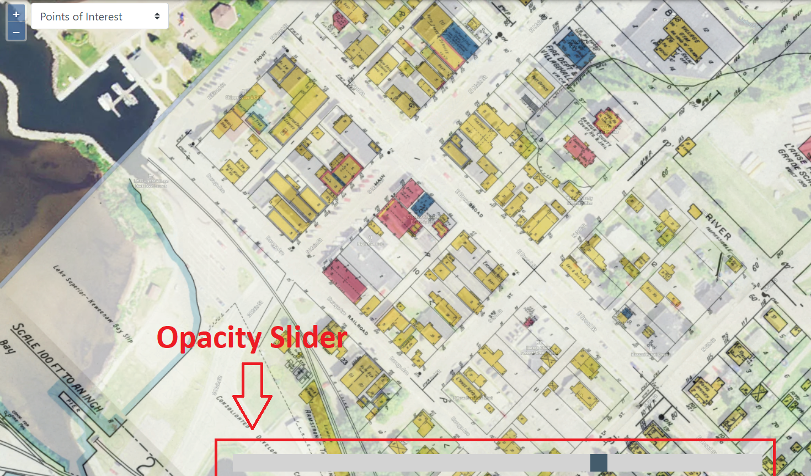

About this Project

(1930s Aerial photo of downtown L'Anse showing the Ford Saw Mill.)
This interactive map shows what L'Anse, Michigan looked like in 1938 with the use of Sanborn Fire Insurance Maps. The Sanborn maps are overlaid of top of a current aerial basemap to allow the user to compare historical L'Anse to what it looks like in the present.
Use the opacity slider to lighten the Sanborn maps to see what L'Anse looks like today compared to the past.
You can also use the spy glass to hover over a place in the present to reveal what was there in 1938.

At any point click the Opacity button to return to the opacity slider from the Spy glass.

Mobile users can use the geolocation button and walk around downtown L'Anse to gain a deeper visual of the past to present.
This project was developed by Bob Cowling. The development consisted of georeferencing historcal sanborn maps and then displayed them as a basemap in an OpenLayers application. If you have any questions about the application please feel free to Contact Me.